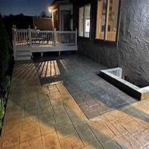

-
How Stamped Concrete Can Enhance the Look of Your Property
Posted on October 29, 2018 by Bizadmin

Designing a new patio is a complex process that takes into consideration the patio’s size, proportions, and drainage. Conventional patios are built up in several layers of gravel and leveling sand beneath the poured concrete. Larger commercial projects sometimes require geotechnical engineers and three or more separate teams of laborers to complete. However, stamped concrete, available through a Houston concrete supply company, can save you time and money on your next outdoor hardscaping project.
It’s a Master of Disguise
Stamped concrete at its most basic is a slab of concrete with a texture pressed into the top surface. This stamping process can make concrete look like a variety of other materials including stone, brick, tile, and even wood. To make the concrete more convincing, it can be given the wood grain and knots of wood and the texture adjusted to be as smooth or as rough as needed. Concrete colorants and finishes will fine tune the hue and tone of the concrete to closely replicate the material of your choice.
Does the Contractor Have References?
Checking on the references offered by the contractors you are considering can give you a better idea of the type of service you can expect. Pay special attention to the comments made about promptness and reliability, as these traits can have a significant effect on the quality of the services you receive from your Houston concrete contractor.
Care-Free Maintenance
Unlike other hardscaping materials like flagstone and brick, concrete will last for decades even under harsh conditions. As long as your walkway, patio, or driveway is properly prepared with adequate drainage, your stamped concrete should require nothing more than an occasional pass with the power washer to keep looking like new. Conventional hardscaping materials can settle unevenly, which requires leveling every few years — a costly and time-consuming process. Flagstone and bricks set into gravel and sand bases allow weeds to grow up between individual pavers, which is a problem that stamped concrete avoids entirely.
Installation Is Quick and Affordable
A Houston concrete contractor can handle every step of the stamped concrete installation process. There is no need to bring in loads of subcontractors that you have not personally vetted, and installation typically takes just a few days to excavate, prep the site, and pour the concrete. Compared to the one to two week timetable of a conventional hardscaping project, stamped concrete means dealing with heavy construction equipment and construction workers for a shorter period of time.
Future Upgrades
Want to change your texture or add a conventional hardscaping material in a few years? Stamped concrete is a perfect substrate for adding additional layers. Just clean the concrete, frame the area and pour the fresh concrete. There is no need to tear everything out and start fresh.
Want to install a new patio or driveway without worrying about maintenance issues down the road? Contact our Houston ready mix concrete team today at 713-227-1122!
This entry was posted in Ready Mix Concrete and tagged Houston Concrete Contractor, Houston Concrete Supply, Houston Ready Mix Concrete. Bookmark the permalink.